1.2.4
스택과 큐의 개념, 표현, 연산, 응용
- └스택 (개념, 연산, 연결 스택, 스택을 응용한 수식 계산)
- └큐 (개념, 연산, 원형 큐 개념과 연산, 연결 큐)
스택과 큐의 개념, 표현, 연산, 응용
- 스택 (stack)
- 특징
- ① 삽입·삭제가 같은 곳에서 이루어짐 (포인터 하나로 가능)
- ② LIFO (Last-In-First-Out list)
- ③ 인터럽트 호출, 재귀적 호출, 서브 프로그램 호출 시 복귀 주소 저장, 산술식 계산 등에 사용됨
- ④ 순환 알고리즘, 재귀 알고리즘 등에 사용
- 배열 스택
- 삽입 전에는 반드시 : 1) 할당 (삽입할 공간 만들기) – 할당이 안 되면 overflow 상태 2) overflow 검사
- 삭제 전에는 반드시 : 1) 데이터의 유무 확인 – 데이터가 없으면 삭제 불가능 (underflow) 2) 할당받은 공간 해제
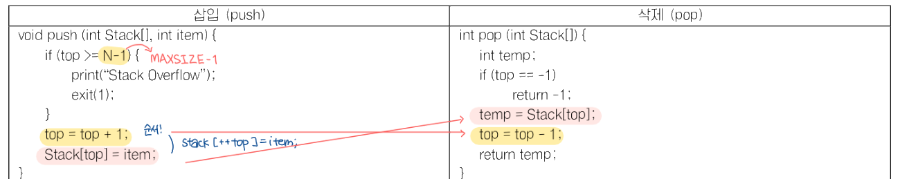
연결리스트로 스택 구현
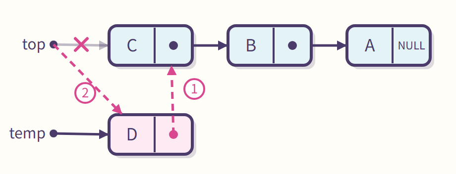
삽입 연산
 삭제 연산
삭제 연산
| 삽입 연산 | 삭제 연산 |
|---|
temp->link = top;
top = temp; | temp = top;
top = temp->link;
free(temp); 원본과 다름 · 원본: “top = tep->link;” |
- 다중 스택
- 2개의 스택 : 배열 하나(0 ~ n−1)의 양 끝에서 stack 1 은 오른쪽으로, stack 2 는 왼쪽으로 자람

- N개의 스택 (2개 이상) : 배열을 같은 크기의 세그먼트로 나눔
- boundary[i] (0 ≤ i < MAX_STACKS) : 스택의 최하단 원소의 바로 위쪽 원소
- top[i] (0 ≤ i < MAX_STACKS) : 최상단 원소
- boundary[i] == top[i] 이면 i 번째 스택은 공백 상태
![메모리를 m/n 크기의 칸으로 나눈 손그림. 0 에 top[0]·boundary[0], m/n 에 top[1]·boundary[1], 2m/n … m−1 까지 이어지고, boundary[i] = top[i] 이면 그 스택은 공백 상태라는 메모가 있다.](1-2-4-fig-5.png)
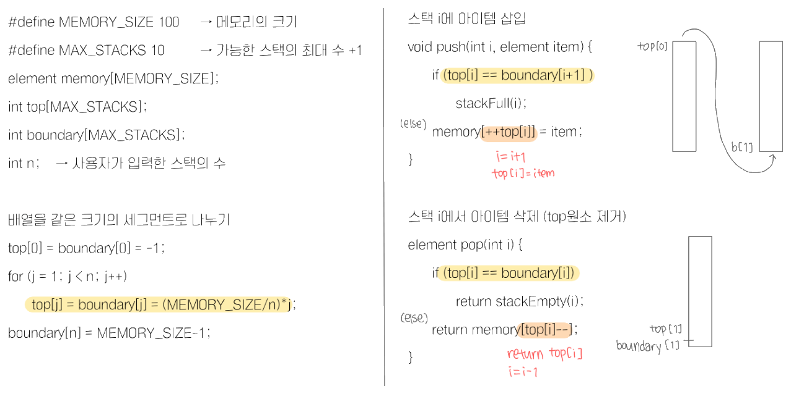
- 기출 2016 : 단방향 연결리스트로 만든 스택의 push() 빈칸

- 스택의 응용 – 수식 표기법 (예 : X = (((A + B) * (C − D)) / E) + (F * G))
- 전위(prefix) 표기법 : = X + / * + A B − C D E * F G
- 산술식에서 연산자 우선순위에 따라 괄호를 먼저 친 후, 모든 연산자를 자신이 속한 왼쪽 괄호 바로 앞으로 이동한 후 괄호 제거
- 중위(infix) 표기법 : X = (A + B) * (C − D) / E + F * G 원본과 다름 · 원본: “X = A + B * C - D / E + F * G”, 괄호를 다 지우면 계산 순서가 바뀜
- 후위(postfix) 표기법 (= 역폴리시 표기법) : X A B + C D − * E / F G * + = 원본과 다름 · 원본: “… C D - * D / …”, E 로 나눔
- 연산자 우선순위에 따라 괄호를 먼저 친 후, 모든 연산자를 자신이 속한 바로 오른쪽 괄호 밖으로 이동한 후 괄호 제거
- 연산자 우선순위가 필요 없음
- 후위 표기식의 계산
- 예 : {(B * C) + A} − (D / E) → A B C * + D E / −
- 규칙 1 : 피연산자를 읽으면 무조건 스택에 push
- 규칙 2 : 연산자를 읽으면 pop 을 두 번 해서 연산한 뒤 결과를 push (먼저 꺼낸 것이 A, 다음에 꺼낸 것이 B 면 B 연산 A)
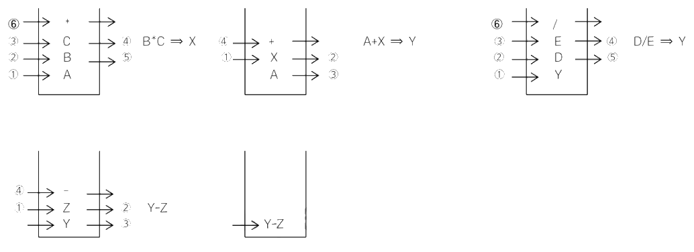
- 중위 표기 → 후위 표기 변환
- 손으로 바꾸기
- ① 식을 모두 괄호로 묶는다
- ② 이항 연산자들을 모두 그들의 오른쪽 괄호와 대체시킨다
- ③ 모든 괄호를 삭제한다
- 예 : a/b−c+d*e−a*c ⇒ ((((a/b)−c)+(d*e))−(a*c)) ⇒ ab/c−de*+ac*−
- 스택으로 바꾸기
- 규칙 1 : 피연산자를 입력받으면 바로 출력 (printf)
- 규칙 2 : 연산자를 입력받으면 우선순위를 비교해 push
- ISOP (In-Stack Operator Priority) : 스택 꼭대기 연산자의 우선순위
- ICOP (In-Coming Operator Priority) : 새로 들어오는 연산자의 우선순위
- i) ISOP < ICOP 인 경우 : 스택으로 들어올 연산자를 스택에 저장
- ii) ISOP > ICOP 인 경우 : 스택에 있는 연산자를 출력시키고, 들어올 연산자를 스택에 저장 (= 우선순위가 높은 연산자는 스택 밖으로 출력됨) – 안에 있는 것이 새것보다 낮으면 그냥 push, 크면 pop 후 push
- iii) ISOP = ICOP 인 경우 : 꺼내고 들어감 (먼저 온 것이 우선순위 높음)
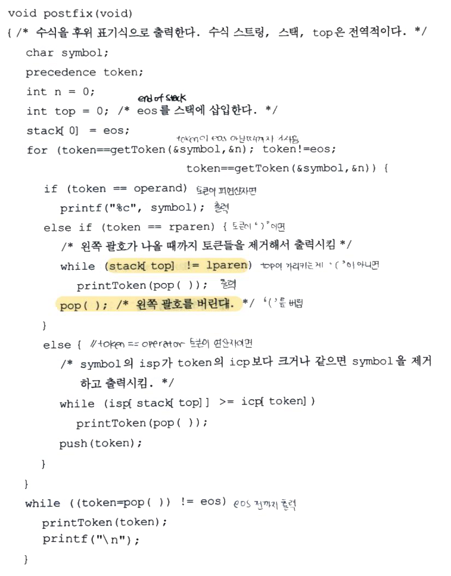
- 기출 2007 (10번) : InStackP[ ]·InputP[ ] 우선순위로 중위식 a * (b + c * d − e) / f − g 를 후위식으로 바꾸기 – 출력 심볼과 스택에 연산자가 가장 많을 때의 내용
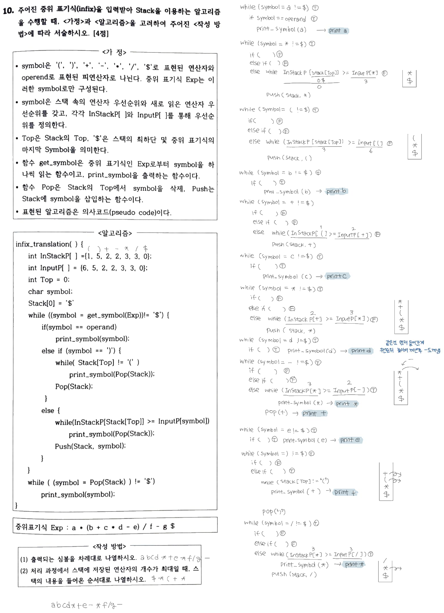
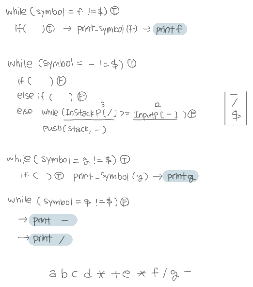
- 기출 2007 (42번) : X + ( Y − Z ) * W 를 처리할 때 단계마다 스택 내용과 출력 결과를 표로 채우기
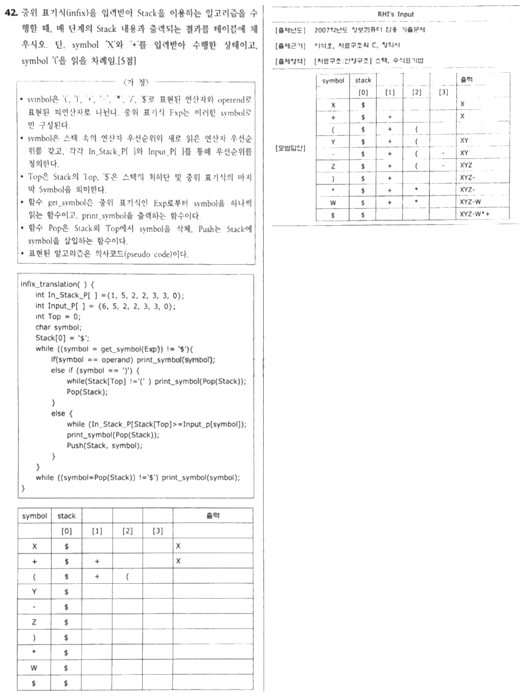
- 기출 2010 (9번) : calculateExp() 로 후위식 "12*345+−*76−/$" 계산 – 출력 결과, 두 번째 * 처리 후 스택 내용, push() 호출 횟수
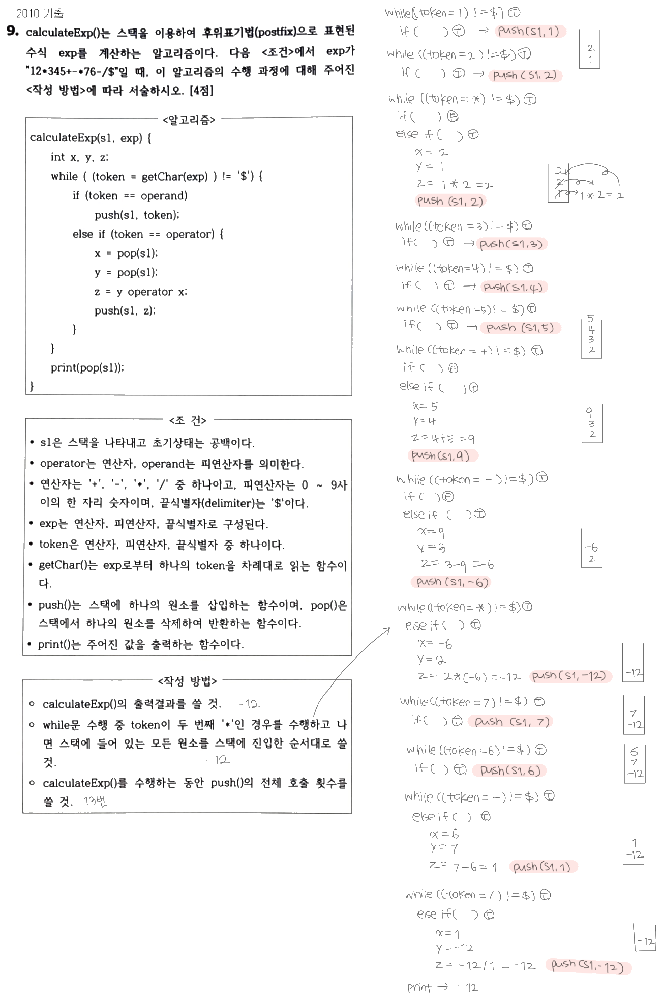
- 큐 (queue)
- 특징
- ① FIFO
- ② 삽입·삭제가 다른 곳에서 이루어짐
- ③ 운영체제에서 많이 사용됨 (buffer : 들어온 순서를 유지해서 밖으로 꺼내 주는 것)
- ④ 포인터 변수 2개 (front, rear)
- 배열을 이용한 선형 큐
- 초기 상태 : front = rear = −1
- 공백 상태 : front = rear
- 포화 상태 : rear = n − 1 (n : 배열의 크기, n − 1 : 배열의 마지막 인덱스)
- f (front) : 저장된 첫 번째 원소의 이전 index 저장
- r (rear) : 가장 최근에 삽입된 데이터를 가리키는 index
- push() : overflow 검사 → r 을 움직인 후 삽입이 원칙
- pop() : underflow 검사 → f 를 움직인 후 삭제
#define MAX_QUEUE_SIZE N
extern int front = -1, rear = -1;
int Queue[MAX_QUEUE_SIZE]; |
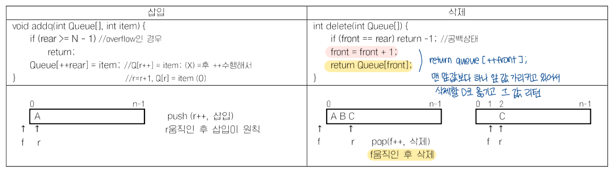
연결리스트로 큐 구현 (Linked Queue)
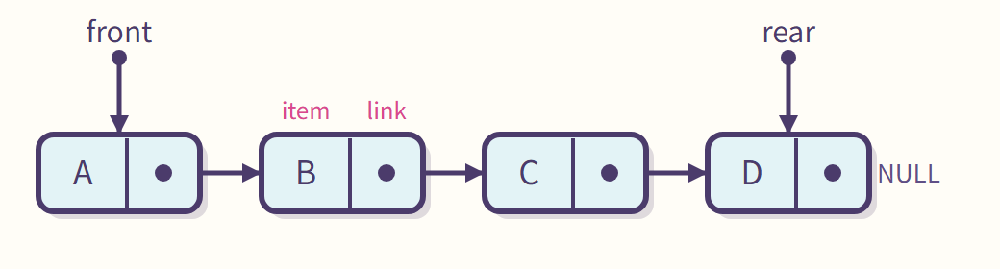
- 개념
- 기본적인 구조 : 단일 연결리스트인데 노드를 가리킬 수 있는 2개의 포인터 front, rear가 추가된 형태
- front 포인터 : 삭제 관련
- rear 포인터 : 삽입 관련
- 삽입 연산
 공백일 때
공백일 때
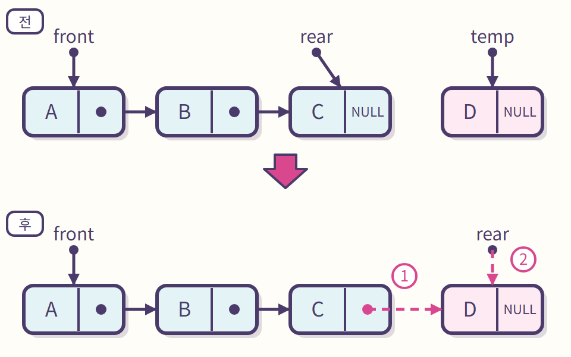
기존 노드 존재할 때
| 공백일 때 | 기존 노드 존재할 때 |
|---|
temp->data = data;
temp->link = NULL;
if (is_empty(q)) {
front = temp;
rear = temp;
} 원본과 다름 · 원본: “if_empty(q)” | else {
rear->link = temp;
rear = temp;
} 원본과 다름 · 원본에는 닫는 } 가 없음 |
| 공백 상태라면, front와 rear가 새로운 노드 가리키도록 만든다 | 기존 노드가 있다면, rear의 위치를 바꾼다 (코드 순서 중요!) |
 큐에 노드가 여러 개 있을 때
큐에 노드가 여러 개 있을 때
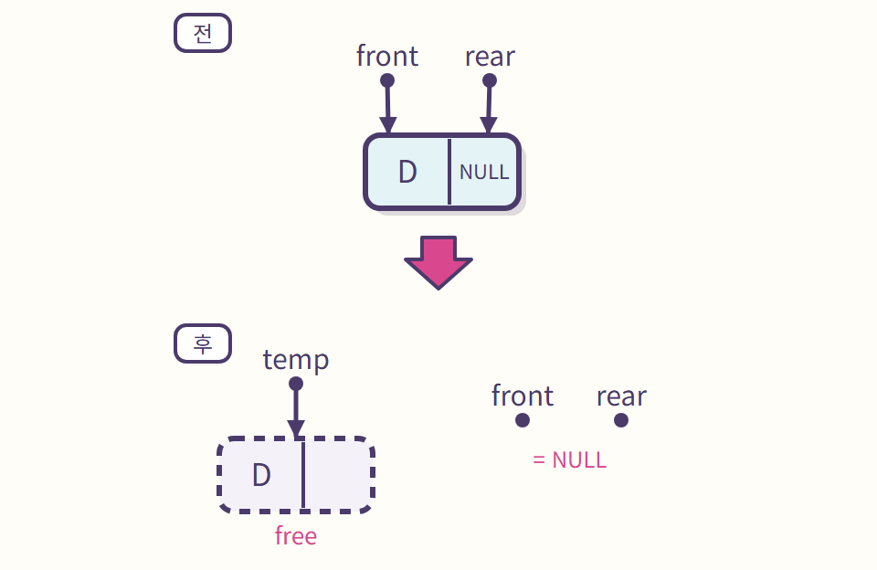
큐에 노드가 1개 남았을 때
| temp = front; | front가 가리키고 있는 노드를 temp가 똑같이 가리키게 함 |
| front = front->link; | front에는 front의 link값 대입 (다음 노드를 가리키게 되거나, NULL이 되거나) |
if (front == NULL)
rear = NULL; | |
| free(temp); | temp 삭제 |
- 큐의 유형
- ① 선형 큐
- 단점 : 빈 공간이 있는데도 overflow 가 발생할 수 있음
- 해결 : 구조는 그대로 → ② 이동 큐, 구조를 바꿈 → ③ 원형 큐(환형 큐)
- ② 이동 큐 : 어떤 시점마다 원소를 이동
- 단점 : 원소 이동 수가 많아서 성능이 떨어짐
- ③ 원형 큐 (환형 큐)
- 장점 : 원소 이동 없이 overflow 해결
- 단점 : ① 원형 큐가 끝까지 차서 f 와 r 의 인덱스가 같아지면 data 가 없다고 판단, 삭제 불가능해짐
- ∵ overflow, underflow 의 조건이 모두 f == r 이어서 구분 불가 → ∴ 반드시 하나의 빈방 필요
- ② 방의 수보다 1 적게 데이터 저장 가능
- 빈방을 두기 싫으면 (둘 중 하나 선택) : i) Tag – 가득 찼는지 아닌지 변수를 이용하여 모니터 ii) Counter – 개수 세기
- 특징 : n 개의 환형 큐는 n−1 개의 데이터를 삽입할 수 있음 (= 하나의 여유 공간 필요)
- 원소 수 : 원형 큐의 전체 크기가 N 이면 (r + N − f) % N
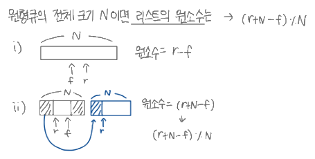
- 큐의 끝까지 도달하면 rear 를 다시 0 으로 : if (rear == MAX_QUEUE_SIZE-1) rear = 0; else rear++;
| 삽입 | 삭제 |
|---|
void cpush(int Queue[], int item) {
crear = (crear + 1) % N; // 순환 표현
if (crear == cfront) {
printf("Queue Overflow\n");
}
Queue[crear] = item;
} | int cpop(int Queue[]) {
if (cfront == crear) // 비어 있는 경우
return -1;
cfront = (cfront + 1) % N;
return Queue[cfront];
} |
| 선형 큐 | 환형 큐 |
|---|
| 초기화 | f = r = −1 | f = r = 0 |
|---|
| full 조건식 | r >= N − 1 원본과 다름 · 원본: “r >= N”, r 이 마지막 인덱스 N−1 이면 포화 | f == (r + 1) % N 원본과 다름 · 원본: “f == r”, 빈방 하나를 두는 방식에서 f == r 은 공백 |
|---|
| empty 조건식 | f == r | f == r |
|---|
| 포인터 처리 | f++, r++ | f = (f + 1) % N
r = (r + 1) % N |
|---|
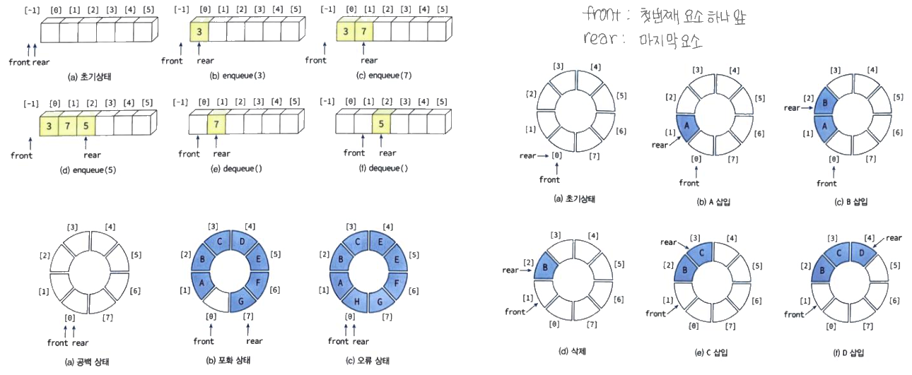
- 기출 2019 : 배열로 만든 (가) 선형 큐와 (나) 원형 큐의 insert·delete 빈칸, n = 4 일 때 연산 7번 뒤 front·rear 값
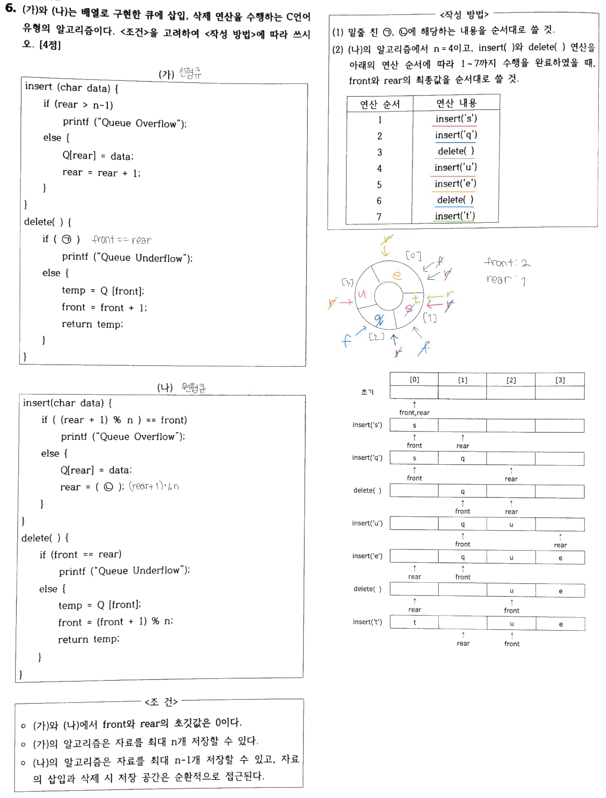
- 데크 (Deque, Double Ended Queue) : 스택과 큐를 혼합한 형태
- 원소의 삽입·삭제가 리스트의 양쪽 끝에서 모두 허용되는 선형 리스트 (앞쪽 끝·뒤쪽 끝 모두 삽입·삭제 가능)
- 기출 2010 (8번) : 데크 연산 insertFirst·insertLast·deleteFirst·deleteLast 로 스택과 큐의 삽입·삭제 만들기
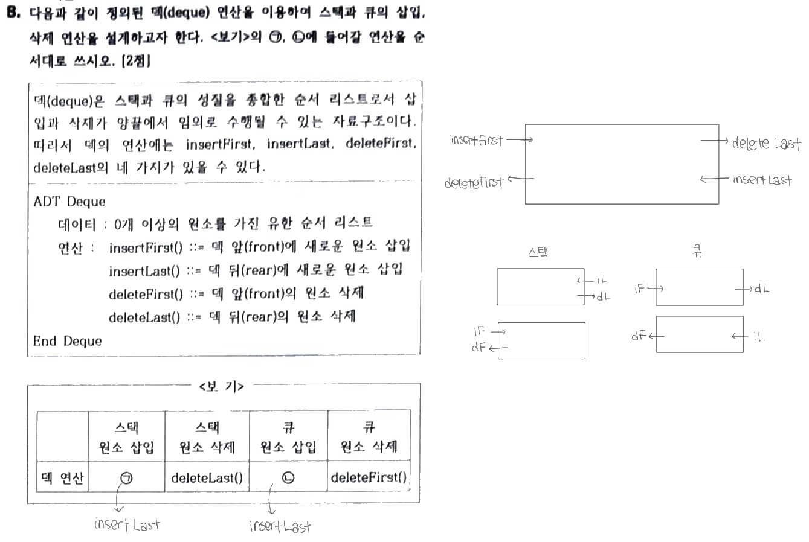